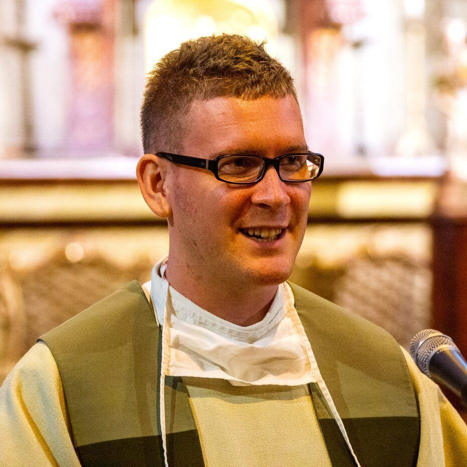

Kontakty
Kontaktujte nás
Budeme rádi za každé vaše setkání s námi, ať už osobní, telefonické nebo e-mailové. S důvěrou se na nás obraťte.

Duchovní správceP. Bystrík Feranec
- feranec@bip.cz
farnost.kraslice@bip.cz - Telefon
- +420 720 512 641
- Úřední hodiny
- pondělí – pátek, 8:30 – 16:00
- Adresa
- Kpt. Jaroše 321/2, 358 01 Kraslice
- Farní kostel
- Nejsvětějšího Těla Kristova (Božího Těla)
Hradební 1821, 358 01 Kraslice - IČ · účet
- 45374872 · 860622379/0800
Biskupství plzeňské
- bip@bip.cz
- Statutární zástupci
- Mons. Tomáš Holub, biskup plzeňský
P. Petr Hruška, generální vikář - Adresa
- náměstí Republiky 234/35, 301 00 Plzeň
- IČ · DIČ
- 45334439 · CZ45334439
Podpořte farnost
Každý dar pomáhá
Chod farnosti, vytápění kostelů v zimních měsících a opravy historických sakrálních památek můžeme zajišťovat díky vaší obětavosti a dobrovolným darům.
Potvrzení o daru: na požádání vám rádi vystavíme potvrzení o daru pro účely daňového přiznání.
Ze srdce vám děkujeme za každou vaši pomoc, štědrost a modlitbu.
Dar přes QR kód
Vyberte částku a naskenujte kód v aplikaci své banky.
Číslo účtu farnosti · 500 Kč860622379/0800
Najdete nás zde